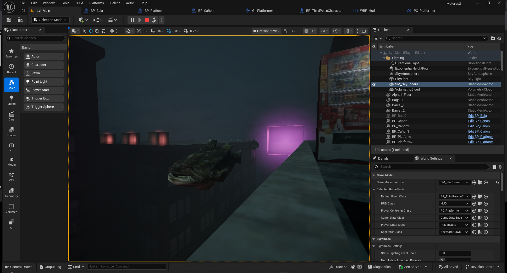
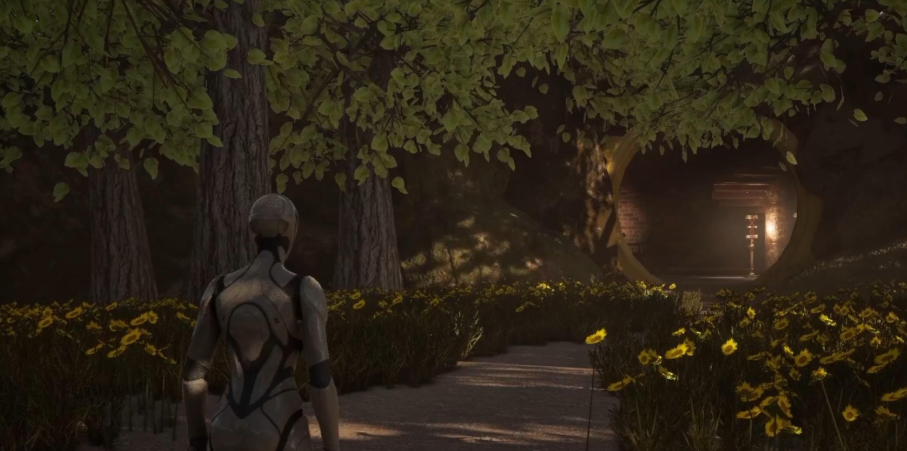
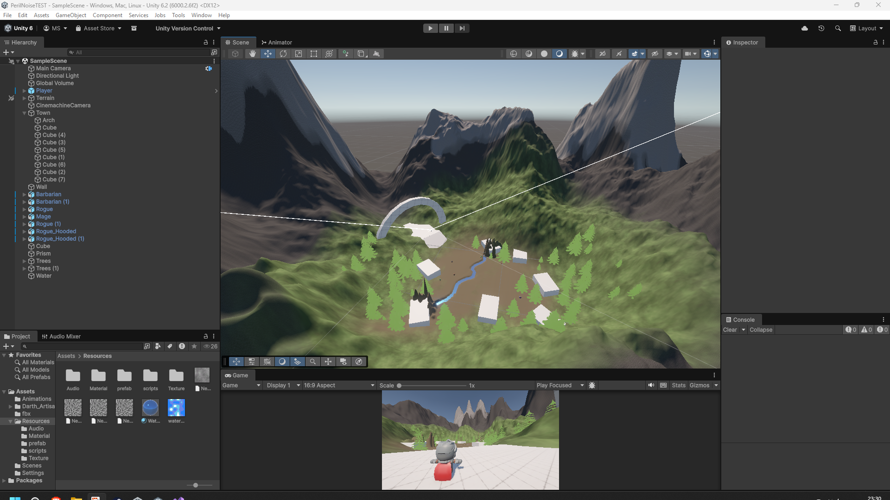
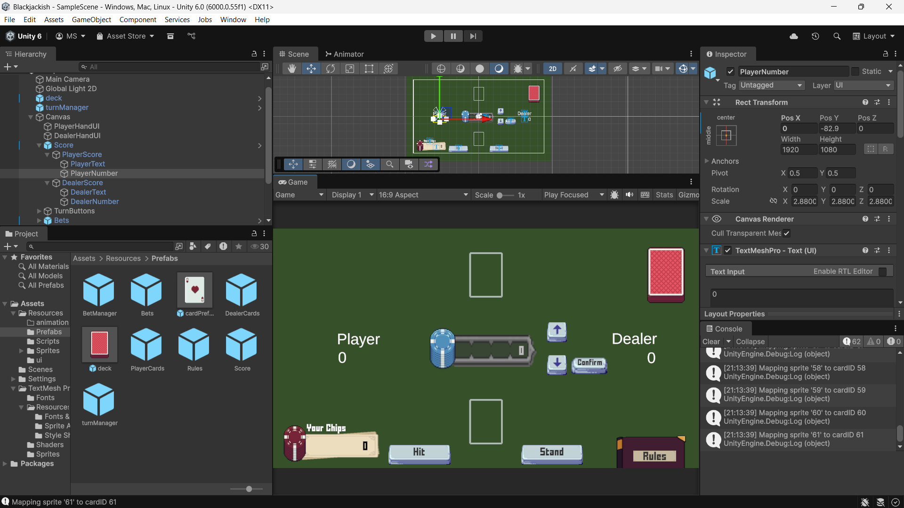
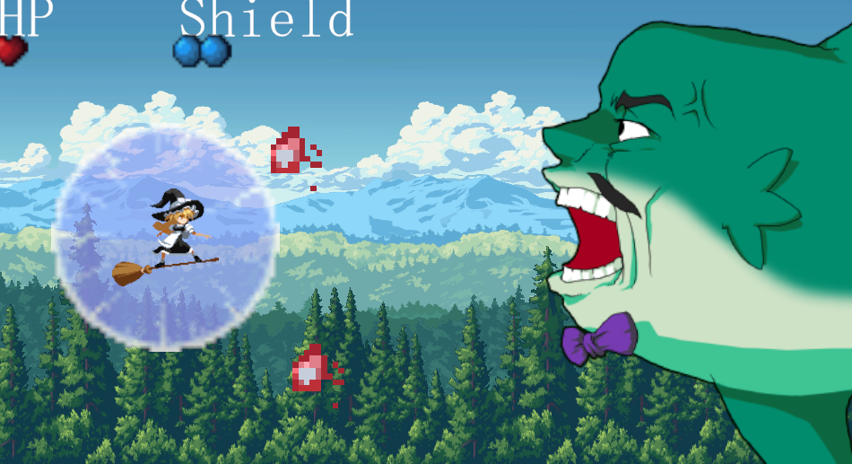

Academic Projects
Motores 2

For this class project, the idea was to create a playable 3D platformer level in UE5 using blueprints. You can watch a video of this project, including the use of Blueprints, here.
Technical Art

This assignment was to build an outdoors scene in UE5, and afterwards move into an interior scene, taking into account composition and material properties. You can watch a video of the project here.
Audio

For this project, the assignment was to incorporate 3D audio with Unity's Audio Mixer and Audio sources, as well as a transition between two different snapshots for music. Additionally, I took this chance to learn Unity's terrain tools, and use Perlin noise to paint the textures. I also used it to make the water movements for the river. You can play it here.
Programming 2

In this case, the rubric was to, in C#, apply at least 2 patterns, such as Singleton or Object Pooling, and use inheritance and interfaces. Instead of doing a typical spaceship shooter like we were taught in class, I decided to have fun and do a card game. You can play it here.

This was my first C# project, where I used assets from Touhou and Trouble Witches. It's a simple game that tries to be a bullet hell. You can play it here.